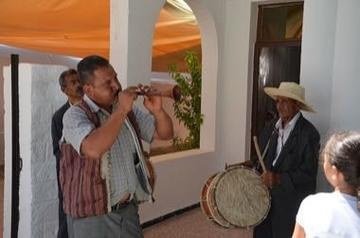
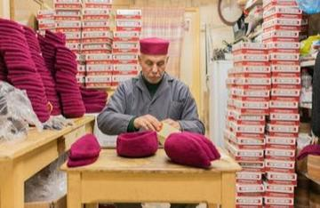

Skip to content
World Heritage Games
A
n
a
t
l
a
s
o
f
p
l
a
y
Menu
Journey
Cradles
Countries
Types
Families
A to Z
Apps
About
Search
Theme
View
Mosaic
Atlas
River of Time
List
Home
/
Countries
Middle East and North Africa
Tunisia
2 traditions from Tunisia.
Crossroads and Golden Ages
1

Mezoued Bagpipe and Tabl Drum
Tunisia · Musical instruments
Living Traditions
1

Chechia Felt-Cap Workshop
Tunisia · Crafts and making